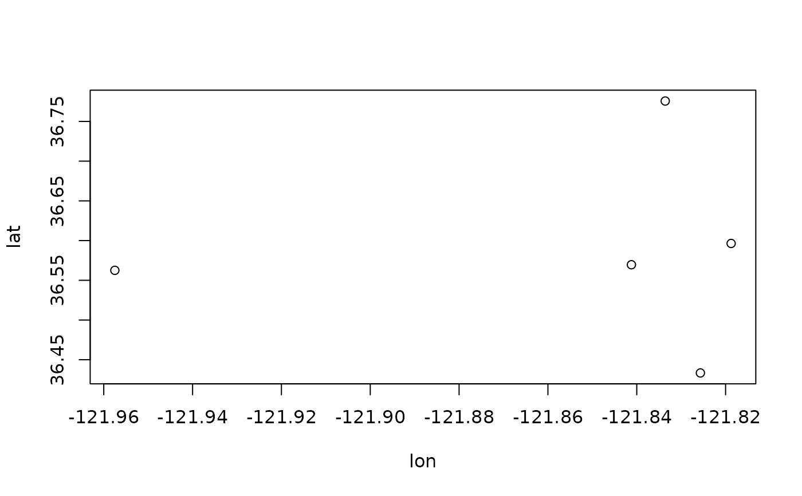

sp_occurrence.RdDownload data from the Global Biodiversity Information Facility (GBIF) data portal.
sp_genus returns a data.frame with all the species names associated with a genus.
sp_occurrence downloads occurrence records for a single species.
You can check the number of records returned by using the option download=FALSE.
Note that the you can only download up to record number 100,000. To avoid getting more than 100,000 records, you can do separate queries for different geographic areas. This has been automated in sp_occurrence_split. This function recursively splits the area of interest into smaller areas until the number of records in an area is less than 50,000. It then downloads these records and saves them in a folder called "gbif". After all areas have been evaluated, the data are combined into a single file and returned as a data.frame or SpatVector). If the function is interrupted, it can be run again, and it will resume where it left off.
If you want to download data for an entire genus, first run sp_genus and then download data for the returned species names one by one.
Before using this function, please first check the GBIF data use agreement and see the note below about how to cite these data.
sp_genus(genus, simple=TRUE, ...)
sp_occurrence(genus, species="", ext=NULL, args=NULL, geo=TRUE,
removeZeros=FALSE, download=TRUE, ntries=5, nrecs=300,
start=1, end=Inf, fixnames=TRUE, sv=FALSE, ...)
sp_occurrence_split(genus, species="", path=".", ext=c(-180,180,-90,90),
args=NULL, geo=TRUE, removeZeros=FALSE, ntries=5, nrecs=300,
fixnames=TRUE, prefix=NULL, sv=FALSE, ...)character. genus name
character. species name
SpatExtent object to limit the geographic extent of the records. A SpatExtent can be created using functions like ext and draw
character. Additional arguments to refine the query. See query parameters in http://gbif.org/developer/occurrence for more details
logical. If TRUE, only records that have a georeference (longitude and latitude values) will be downloaded
logical. If TRUE, all records that have a latitude OR longitude of zero will be removed if geo==TRUE, or set to NA if geo==FALSE. If FALSE, only records that have a latitude AND longitude that are zero will be removed or set to NA
logical. If TRUE, records will be downloaded, else only the number of records will be shown
integer. How many times should the function attempt to download the data, if an invalid response is returned (perhaps because the GBIF server is very busy)
integer. How many records to download in a single request (max is 300)?
integer. Record number from which to start requesting data
integer. Last record to request
If TRUE a few unwieldy and poorly chosen variable names are changed as follows. "decimalLatitude" to "lat", "decimalLongitude" to "lon", "stateProvince" to "adm1", "county" to "adm2", "countryCode" to "ISO2". The names in "country" are replaced with the common (short form) country name, the original values are stored as "fullCountry"
character. Where should the data be downloaded to (they will be put in a subdirectory "gbif")?
character. prefix of the downloaded filenames (best left NULL, the function will then use "genus_species"
logical. If TRUE, a vector the accepted species names are returned. Otherwise a data.frame with much more information is returned
logical. If TRUE, a SpatVector rather than a data frame is returned.
additional arguments passed to download.file
data.frame, or SpatVector if sv=TRUE
Under the terms of the GBIF data user agreement, users who download data agree to cite a DOI. Citation rewards data-publishing institutions and individuals and provides support for sharing open data [1][2]. You can get a DOI for the data you downloaded by creating a "derived" dataset. For this to work, you need to keep the "datasetKey" variable in your dataset.
sp_occurrence("solanum", "acaule", download=FALSE)
#> Loading required namespace: jsonlite
#> Cached as: /tmp/RtmpYfsEyU/file1df111acaeb6.json
#> [1] 5070
g <- sp_occurrence("Solanum", "acaule", geo=TRUE, end=5)
#> Cached as: /tmp/RtmpYfsEyU/file1df148622d6f.json
#> 5 records found
#> 1-
#> Cached as: /tmp/RtmpYfsEyU/file1df148622d6f.json
#> 5
#> 5 records downloaded
# \donttest{
sp_occurrence("Batrachoseps", "luciae", down=FALSE)
#> Cached as: /tmp/RtmpYfsEyU/file1df16db41dcb.json
#> [1] 2412
g <- sp_occurrence("Batrachoseps", "luciae", geo=TRUE, end=5)
#> Cached as: /tmp/RtmpYfsEyU/file1df139583707.json
#> 5 records found
#> 1-
#> Cached as: /tmp/RtmpYfsEyU/file1df139583707.json
#> 5
#> 5 records downloaded
plot(g[, c("lon", "lat")])

## args
a1 <- sp_occurrence("Elgaria", "multicarinata",
args="recordNumber=Robert J. Hijmans RH-2")
#> Cached as: /tmp/RtmpYfsEyU/file1df14730d1c4.json
#> 1 records found
#> 1-
#> Cached as: /tmp/RtmpYfsEyU/file1df14730d1c4.json
#> 1
#> 1 records downloaded
a2 <- sp_occurrence("Batrachoseps", "luciae",
args=c("year=2023", "identifiedBy=Anthony Ye"))
#> Cached as: /tmp/RtmpYfsEyU/file1df15de75adb.json
#> 10 records found
#> 1-
#> Cached as: /tmp/RtmpYfsEyU/file1df15de75adb.json
#> 10
#> 10 records downloaded
## year supports "range queries"
a3 <- sp_occurrence("Batrachoseps", "luciae",
args=c("year=2020,2023", "identifiedBy=Kuoni W"))
#> Cached as: /tmp/RtmpYfsEyU/file1df154658ca0.json
#> 57 records found
#> 1-
#> Cached as: /tmp/RtmpYfsEyU/file1df154658ca0.json
#> 57
#> 57 records downloaded
table(a3[,c("year")])
#>
#> 2021 2022 2023
#> 1 42 14
# }